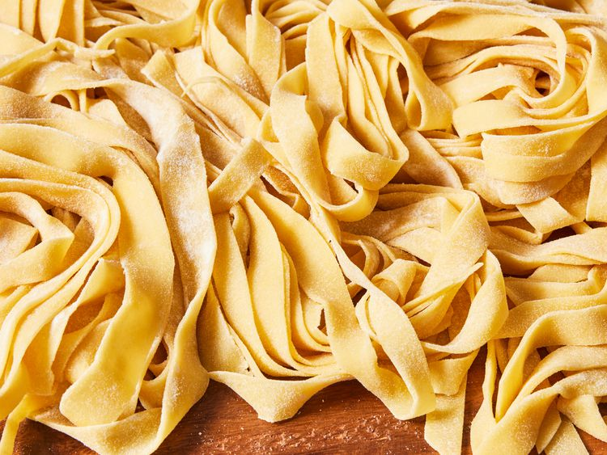

Home Page
Pasta Recipe

Discription
Pasta is a type of food typically made from an unleavened dough of wheat flour mixed with water or eggs, and formed into sheets or other shapes, then cooked by boiling or baking. Pasta was originally only made with durum, although the definition has been expanded to include alternatives for a gluten-free diet, such as rice flour, or legumes such as beans or lentils. Pasta is believed to have developed independently in Italy and is a staple food of Italian cuisine, with evidence of Etruscans making pasta as early as 400 BCE in Italy.
Ingredients
- 2 cups flour
- 3 large eggs, at room temperature
- 2 tablespoons olive oil
- 1 teaspoon salt
- 2 tablespoons water, or as needed
Steps
- Gather all ingredients.
- All ingredients gathered to make homemade pasta dough.
- Mix flour, eggs, olive oil, and salt in a bowl until combined. Add water, 1 teaspoon at a time, to flour mixture until a smooth, thick dough forms.
- Ingredients mixed together to form a thick dough.
- Turn dough out onto a lightly floured work surface and knead for 10 minutes. Let dough rest for 5 to 10 minutes.
- Dough kneaded for 10 minutes and left to rest.
- Divide dough into 8 balls; use a pasta machine to roll and cut dough into desired pasta shape.